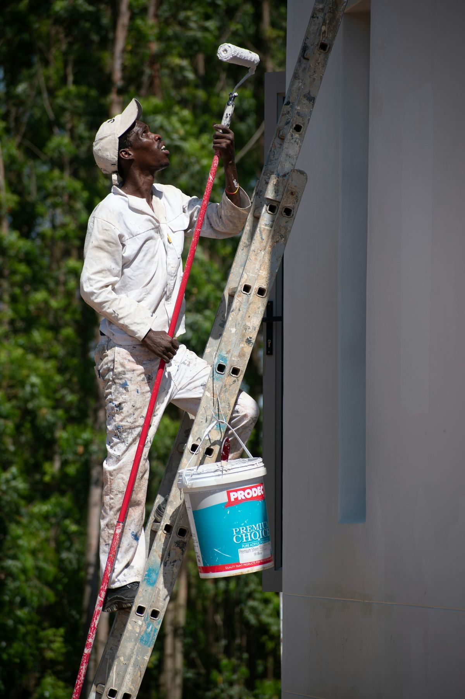
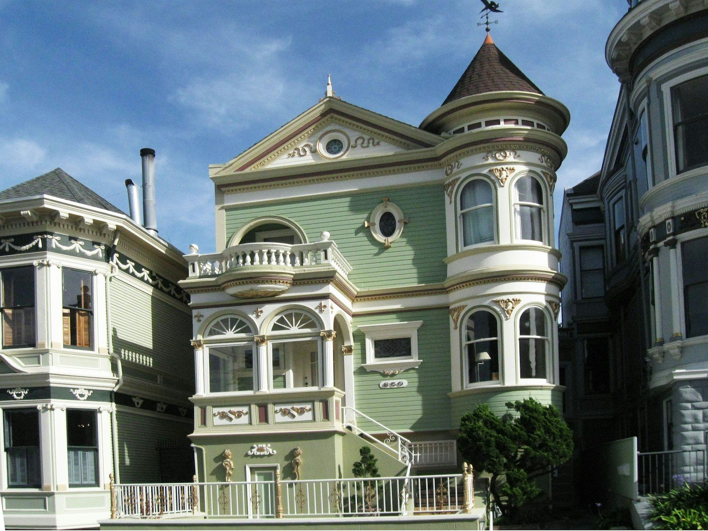
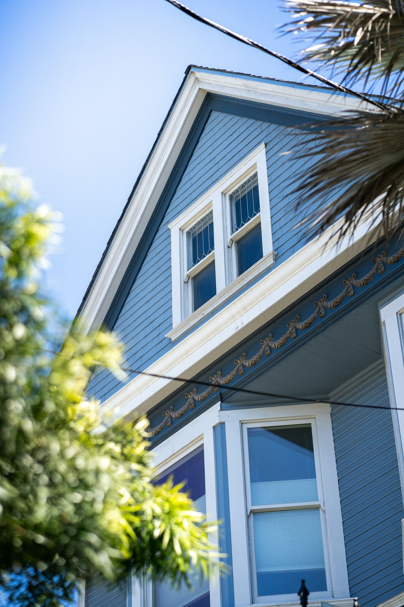
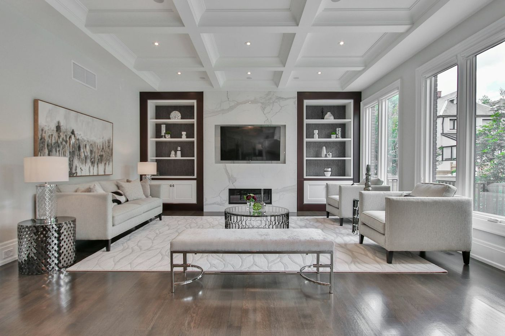
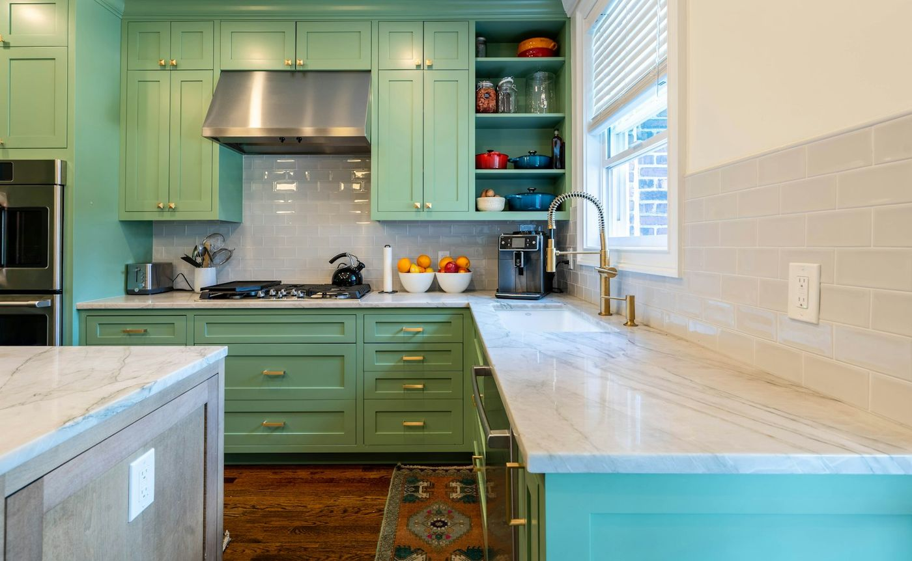
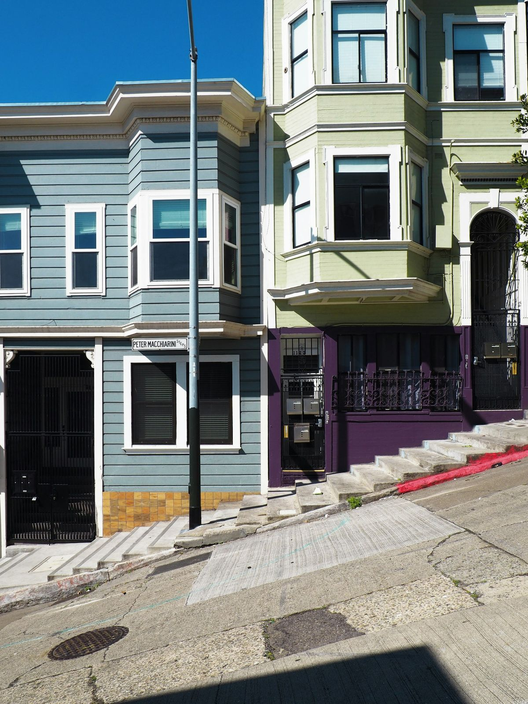
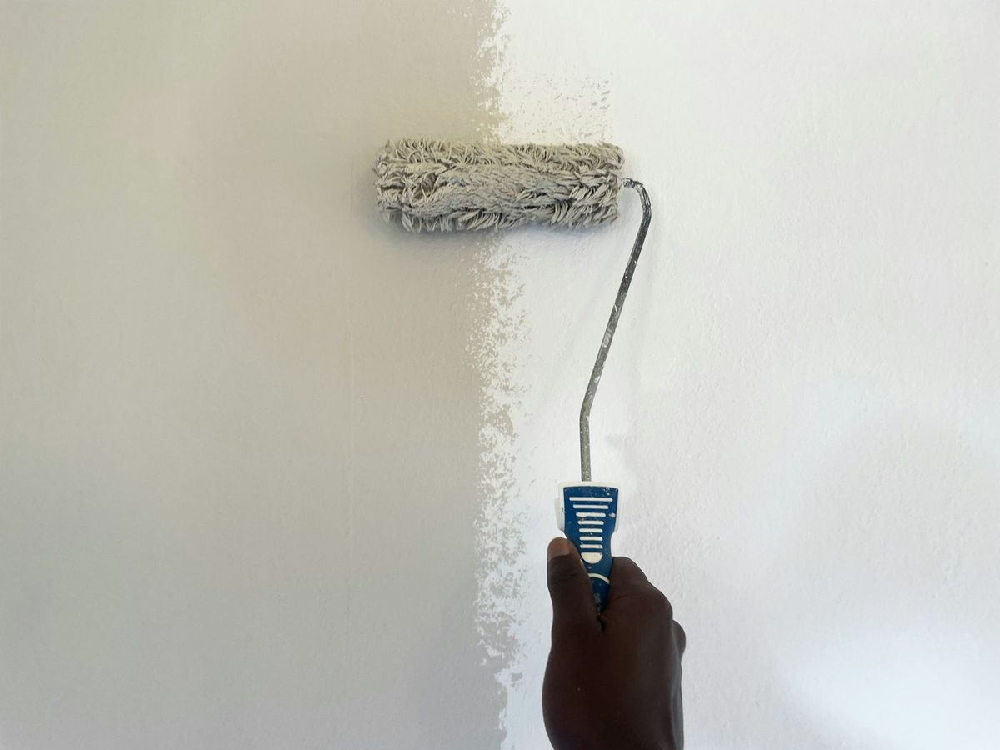
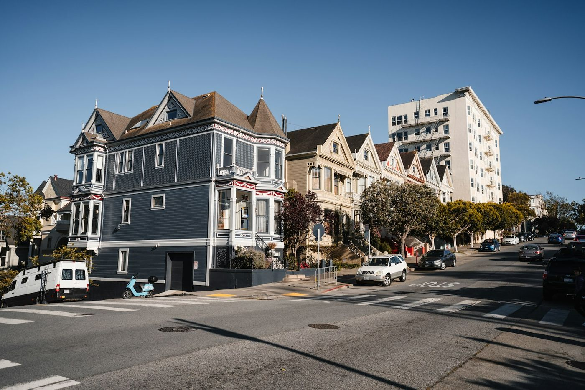

Exterior painting
Siding, stucco, trim, windows and doors. Scraping, sanding and priming bare wood before any finish goes on, so the new coat holds up to fog and wind off the Bay.
House painter · Cow Hollow, San Francisco
Two Bridges Painting is a licensed painting contractor based in Cow Hollow. Interiors, exteriors, Victorian trim and cabinets for homes in the Marina, Cow Hollow and Pacific Heights — quoted and painted by the owner.

What we paint
Every job starts with the same question: what will it take for this paint to still look right in five years? Most of the answer is preparation.

Siding, stucco, trim, windows and doors. Scraping, sanding and priming bare wood before any finish goes on, so the new coat holds up to fog and wind off the Bay.

Brackets, dentils, spindles, window casings and multi-color trim schemes. Slow, careful brush work that older San Francisco homes deserve.

Walls, ceilings, crown molding, baseboards and doors. Furniture and floors covered, patching done before paint, and the room left clean at the end of every day.

Kitchen cabinets, bathroom vanities and built-in shelving, cleaned, sanded and primed for a smooth, durable finish without replacing the boxes.

Painting in San Francisco
Paint in the Marina and Cow Hollow works harder than paint almost anywhere else in California. That changes how the job should be done.
Owner-operated
Two Bridges Painting is a small, owner-run business licensed by the California Contractors State License Board. There is no sales team and no crew you have never met. The licensed owner walks your home, writes the estimate, and does the painting.
That keeps communication simple: one phone number, one person who knows your job, and someone on site who cares how it turns out because their name is on it.

How it works
Tell us what you'd like painted and where you are. We'll set a time to come and look.
We look at the surfaces, talk about colors and finishes, and point out any repairs that should come first.
A clear, written price and scope, free of charge. No pressure to decide on the spot.
Prep first, then paint, then a final walk-through together so nothing is missed.
The homes we work on

Photos are representative stock images of San Francisco homes and painting work, not completed Two Bridges projects. Ask us for photos of recent jobs.
Where we work
Being close by means shorter days on the road and more time on your home. If you're elsewhere in San Francisco, call and ask.
Common questions
Yes. Two Bridges Painting holds an active California C-33 Painting and Decorating license, CSLB #1118287, and carries a $25,000 contractor bond. You can verify both on the CSLB website.
The licensed owner. Two Bridges is an owner-operated business, so the person who walks your home and writes your estimate is the person who does the work.
We're based in Cow Hollow and work mostly in the Marina, Cow Hollow, Pacific Heights, Presidio Heights, Russian Hill, Laurel Heights, North Beach and Nob Hill. If you're elsewhere in San Francisco, call and ask.
Estimates are free. Call or text (415) 515-3456 to set up a time to walk through the job, and you'll get a written estimate.
Free estimate
Call or text with what you'd like painted and your neighborhood. We'll set up a time to walk through it and give you a written estimate.
(415) 515-3456